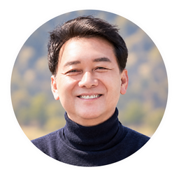
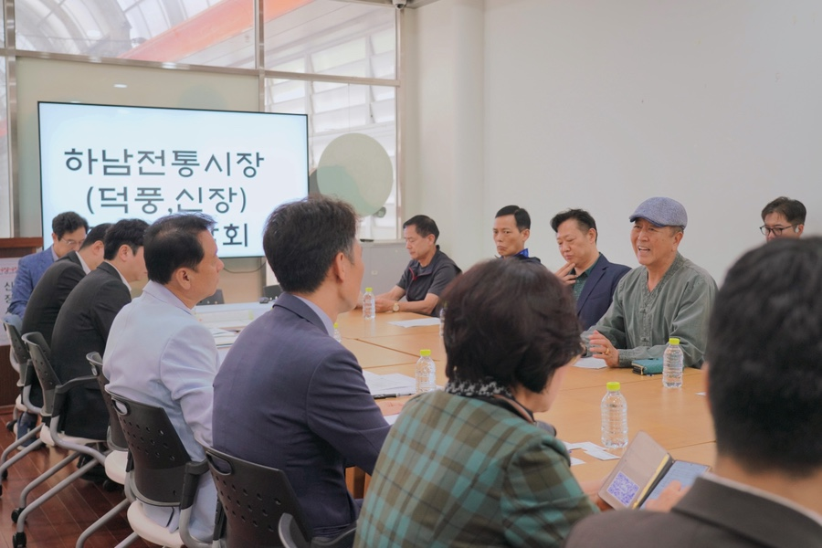
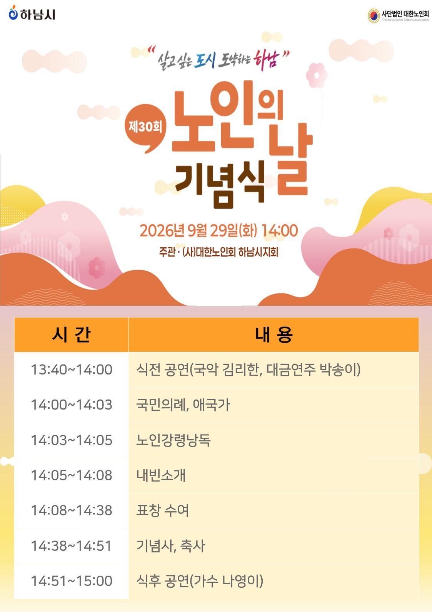
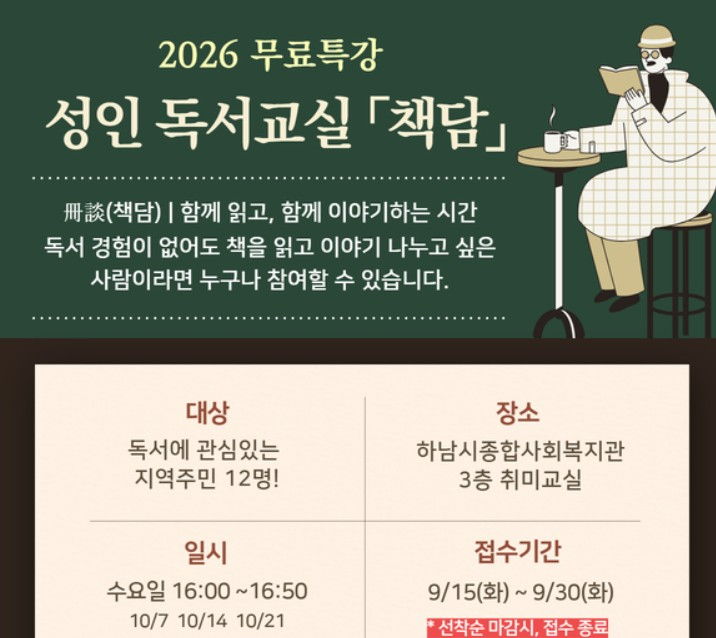

48호 | 2026년 9월 29일 발행
📌 이번 호 주요 목차

우리동네 국회의원 이광재📝 현장일지
이광재, "덕풍·신장시장을 전 국민이 찾는 명소로"… 중기부·소진공 하남 초청해 상인회와 전통시장 육성 머리 맞대
덕풍시장과 신장시장은 정부의 전통시장 육성 사업과 공영주차장 개선 등 국비 지원을 받기 위해 애쓰고 있습니다. 상인들의 목소리를 정책으로 잇기 위해 중소벤처기업부 전통시장 정책 총괄 국장과 소상공인시장진흥공단 관계자들을 하남으로 직접 초청했습니다. 핵심은 시장만의 '콘텐츠 힘'입니다. 덕풍·신장만의 이야기, SNS 트렌드에 맞춘 홍보, 하남 문화 자원과 연계한 대표 콘텐츠가 어우러져야 전 국민이 찾는 명소가 될 수 있습니다. 정부 관계자들은 상인회 질문에 구체적인 전략으로 답했고, 이광재 의원이 제안한 '포인트 마일리지의 지역화폐 전환'도 전통시장 소비를 늘릴 방안으로 구체화되고 있다고 전했습니다. 석바대시장과 하남수산물시장까지 골목마다 활력이 넘치도록 상인들 곁에 서겠다고 밝혔습니다.

📌 출처: 이광재 공식 네이버 블로그
📝 현장일지
이광재, "30년 된 공제 기준, 이제 옷 좀 갈아입힙시다"… 재정경제기획위서 부총리에 낡은 과세 기준 손질 촉구
재정경제기획위원회 전체회의에서 이형일 경제부총리 겸 재정경제부 장관에게 오랫동안 바뀌지 않은 과세 기준을 손질해야 한다고 물었습니다. 양도소득 기본공제 250만 원은 30년째, 추가공제 50만 원은 32년째 그대로이고, 상속세 기초공제 2억 원·일괄공제 5억 원·배우자 상속공제 최저 5억 원은 29년째 멈춰 있습니다. 이렇게 오래 개정되지 않은 공제·비과세 제도는 38개이며, 이 가운데 21개(55.3%)가 상속·증여세 제도입니다. 장관도 물가 변동을 감안해야 한다고 답했습니다. 올봄 추경 때 예상한 약 25조 원의 초과세수에 대해서도 정부의 정확한 재추계를 요구했고, 국정감사에서 구체적인 개편안을 다시 묻겠다고 밝혔습니다.
📌 출처: 이광재 공식 네이버 블로그
📰 언론보도
[한국세정신문] 이광재 의원, 5년 이상 미개정 공제·비과세제도 및 상속·증여세 결정 현황 전수 분석
이광재 의원(하남갑)이 5년 넘게 개정되지 않은 공제·비과세 제도를 전수 분석한 결과, 해당 제도는 38개이며 이 중 21개(55.3%)가 상속·증여세 관련이었습니다. 2025년 상속세 과세 대상자는 2만 2,524명으로 역대 최다였고, 과세표준 10억 원 이하가 1만 7,294명으로 2007년(1,971명)보다 약 9배 늘어 전체의 76.8%를 차지했습니다. 서울·경기 거주자가 65.3%였습니다. 31년 전 만든 자기차량 운전보조금 비과세 한도(월 20만 원)도 그사이 휘발유값이 두 배 오른 사례로 꼽혔습니다. 이 의원은 "무작정 세금을 깎자는 것이 아니라 30년 전 낡은 기준을 현실에 맞게 바로잡는 토론을 시작하자는 것"이라고 밝혔고, 국세청은 현실화된 기준이 마련되도록 개정을 건의하겠다고 답했습니다.
📌 출처: 한국세정신문 (윤형하 기자)
📰 하남 지역 주요 뉴스
📰 복지/어르신
죽음을 말하지만, 교육의 중심은 '오늘'… 하남시, 어르신 웰다잉 과정 운영
하남시가 10월 1일부터 22일까지 매주 목요일 오전 10시~12시, 감일종합사회복지관에서 어르신 대상 웰다잉 교육을 4회 진행합니다. 죽음 자체보다 지금의 삶에 초점을 맞춘 과정으로, 사전연명의료의향서와 생애 말기 의료 선택에 대한 교육, 인생노트 쓰기로 삶을 돌아보는 시간, 감사·화해·용서를 주제로 한 활동이 이어집니다. 건강한 노년을 위한 생활습관 점검과 건강체조, 푸드테라피·전사지컵 만들기 같은 체험 활동도 함께 마련됐습니다.
📌 출처: 중도일보 (이인국 기자)
📰 지역경제/산업
하남시, 지식산업센터 입주 업종 6개 추가 지정… 공실 해소 나서
하남시가 지식산업센터 공실을 줄이기 위해 입주할 수 있는 업종 6개를 새로 지정했습니다. 추가된 업종은 건설업, 전기공사업, 정보통신공사업, 소방시설공사업, 스마트팜, OEM 제조업입니다. 스마트팜은 건물 안에서 생육 환경을 인공적으로 제어하는 시스템을 갖춰야 하고 산업시설에만 입주할 수 있습니다. 입주 시설은 산업집적법·국토계획법·건축법 등을 모두 충족해야 하며, 일부 업종은 세금 감면 같은 혜택에서 제외될 수 있습니다.
📌 출처: 뉴스투데이24 (윤제양 기자)
💬 하남 맘카페 HOT 이슈
추석 연휴가 끝난 뒤 하남 지역 맘카페(미사맘스클럽, 정다운 감일맘, 하남on온, 하남교산맘 등)에서 많이 오르내린 HOT 이슈 TOP 3입니다.
1️⃣ [건강] "아이 독감주사 어디서 맞나요?"… 접종 시작과 함께 백신 품절 문의 잇따라
현황: 어린이 독감 국가예방접종이 시작되면서 맘카페에는 접종 병원을 묻는 글이 이어졌습니다. 미사맘스클럽에는 "명절 전에 맞히려 했는데 가려던 병원 백신이 품절됐다"는 글과 계란 알레르기가 있는 아이가 맞을 백신을 찾는 글이 올라왔고, 정다운 감일맘에서도 "요즘 백신이 부족하다던데 감일에서는 어디서 맞히나요?"라는 문의가 나왔습니다. 하남on온에는 9월 24일 덕풍동 하남 이마트 건물에 소아청소년과·이비인후과 등을 진료하는 의원이 새로 문을 열어 반갑다는 글도 올라왔습니다.
💡 주민 포인트: 올해부터 무료 접종 대상이 생후 6개월~14세(2012년 1월 1일~2026년 8월 31일 출생)로 넓어졌습니다. 2회 접종 대상 어린이는 9월 21일, 1회 접종 대상 어린이는 9월 28일부터 맞을 수 있고, 주소지와 관계없이 가까운 위탁의료기관이나 보건소에서 접종할 수 있습니다. 병원 방문 전 예방접종도우미 누리집(nip.kdca.go.kr)이나 전화로 백신 재고를 확인하세요.
💬 주민 반응: "헛걸음하지 않게 전화부터 해보라"는 조언과 함께, 백신이 남아 있는 병원 정보를 댓글로 나누는 모습이 이어졌습니다.
📌 출처: 네이버 카페 (미사강변도시 미사맘스클럽, 정다운 감일맘, 하남on온) / 질병관리청 예방접종 일정
2️⃣ [교육] "드디어 영어도서관!"… 미사호수공원 어린이영어도서관 10월 개관 기대감
현황: 미사호수공원 옆(망월동)에 짓고 있는 하남시 첫 어린이 전용 도서관이자 영어특화 도서관이 10월 개관을 앞두고 있습니다. 미사맘스클럽에는 "10월 오픈이 얼마 남지 않았다, 아이들 지내기 좋은 미사가 좋다"는 글이 올라왔고, 하남교산맘에는 어린이영어도서관 원어민 강사 재공고 소식이 공유됐습니다. 도서관은 지하 1층·지상 4층 규모로 유아·저학년 자료실과 북카페, 영어특화·고학년 자료실, 영상미디어센터 등이 들어섭니다.
💡 주민 포인트: 정확한 개관일과 이용 방법은 하남시립도서관 누리집(hanamlib.go.kr) 공지를 확인하세요. 개관 초기에는 프로그램 신청이 몰릴 수 있으니 공지를 미리 챙겨 보는 것이 좋습니다.
💬 주민 반응: 기대하는 목소리가 많았고, "호수공원 쪽 글자는 잘 보이는데 건물 간판 글자가 잘 안 보여 아쉽다"는 의견도 나왔습니다.
📌 출처: 네이버 카페 (미사강변도시 미사맘스클럽, 하남교산맘) / 하남일보
3️⃣ [나들이] "이번 주부터 가을이래요"… 미사경정공원 핑크뮬리·코스모스 산책 인기
현황: 연휴가 끝나고 아침저녁 공기가 선선해지면서 가까운 가을 나들이 장소를 묻고 추천하는 글이 늘었습니다. 미사맘스클럽에는 미사경정공원 핑크뮬리가 풍성하게 피기 시작했고 한편에 코스모스밭도 있어 사진 찍기 좋다는 산책 후기가 올라왔습니다. "이번 주 후반부터 날씨가 확 쌀쌀해진다"며 화담숲, 남한산성, 조정경기장 근처 카페 등 가까운 가을 명소를 추천하는 글도 이어졌습니다.
💡 주민 포인트: 핑크뮬리는 보통 10월에 가장 풍성해집니다. 아침저녁 기온 차가 크니 아이와 산책할 때는 얇은 겉옷을 챙기세요. 10월 목요일에는 미사호수공원에서 '네 바퀴 숲속도서관'도 열립니다(아래 ALL IN 하남라이프 참고).
💬 주민 반응: "아직은 아기 같은 핑크뮬리지만 제법 풍성하다", "가을 가기 전에 꼭 가봐야겠다"는 댓글이 달렸습니다.
📌 출처: 네이버 카페 (미사강변도시 미사맘스클럽)
🎭 ALL IN 하남라이프
2026년 9월 29일 기준 한눈에 보는 하남시 최신 문화·행사·교육 안내 가이드
🎉 오늘 2026.09.29(화) 14:00 | 기념행사
제30회 노인의 날 기념식
"나라 발전과 사회의 귀감이 되신 어르신들께 감사와 존경을!"
오늘 오후, 어르신들의 노고에 감사하는 노인의 날 기념식이 열립니다. 국악·대금 연주로 문을 열고 노인강령 낭독, 표창 수여, 기념사·축사에 이어 가수 공연으로 마무리합니다.
🗓 일시: 2026년 9월 29일(화) 14:00 ~ 15:00 (식전공연 13:40부터)
📍 장소: 하남시미사노인복지관 2층 대강당
🎤 공연: 식전 국악 김리한·대금 박송이 / 식후 가수 나영이
🏛 주관: (사)대한노인회 하남시지회
☎️ 문의: 하남시미사노인복지관 031-794-9368
오늘 오후, 어르신들의 노고에 감사하는 노인의 날 기념식이 열립니다. 국악·대금 연주로 문을 열고 노인강령 낭독, 표창 수여, 기념사·축사에 이어 가수 공연으로 마무리합니다.
🗓 일시: 2026년 9월 29일(화) 14:00 ~ 15:00 (식전공연 13:40부터)
📍 장소: 하남시미사노인복지관 2층 대강당
🎤 공연: 식전 국악 김리한·대금 박송이 / 식후 가수 나영이
🏛 주관: (사)대한노인회 하남시지회
☎️ 문의: 하남시미사노인복지관 031-794-9368

📌 출처: 하남시미사노인복지관 / (사)대한노인회 하남시지회
🚐 2026.10월 매주 목요일 | 야외 이동도서관
미사호수공원에서 만나는 이동도서관 '네 바퀴 숲속도서관'
"바쁜 일상에서 잠시 벗어나 야외 공원에서 독서와 쉼을!"
나룰도서관 이동도서관 차량이 10월 목요일마다 미사호수공원을 찾아갑니다. 북박스·의자·담요·우산 같은 야외독서용품을 당일 빌려주고, 차량 안에서 책을 읽거나 대출·반납할 수 있습니다. 그림책 원화와 테마 도서 전시도 함께 열립니다.
🗓 일시: 10월 1일·8일·15일·29일(목) 10:00 ~ 15:00
🚫 휴관: 10월 22일(목) 임시 휴관
📍 장소: 미사호수공원(망월동 739-1) 잔디마당 부근
👥 대상: 하남시민 누구나 (개인·단체, 현장 회원가입 가능)
☎️ 문의: 나룰도서관 031-790-6887
나룰도서관 이동도서관 차량이 10월 목요일마다 미사호수공원을 찾아갑니다. 북박스·의자·담요·우산 같은 야외독서용품을 당일 빌려주고, 차량 안에서 책을 읽거나 대출·반납할 수 있습니다. 그림책 원화와 테마 도서 전시도 함께 열립니다.
🗓 일시: 10월 1일·8일·15일·29일(목) 10:00 ~ 15:00
🚫 휴관: 10월 22일(목) 임시 휴관
📍 장소: 미사호수공원(망월동 739-1) 잔디마당 부근
👥 대상: 하남시민 누구나 (개인·단체, 현장 회원가입 가능)
☎️ 문의: 나룰도서관 031-790-6887
📌 출처: 하남시 나룰도서관
📚 ~2026.09.30(수) 접수 마감 | 무료 특강
2026 무료특강 성인 독서교실 「책담」 (마감 임박)
"함께 읽고, 함께 이야기하는 시간"
독서 경험이 없어도 책을 읽고 이야기 나누고 싶은 주민이라면 누구나 참여할 수 있는 무료 특강입니다. 접수가 내일(30일) 마감되며, 선착순으로 모집합니다.
🗓 일시: 10월 7일·14일·21일(수) 16:00 ~ 16:50, 3회
📍 장소: 하남시종합사회복지관 3층 취미교실
👥 대상: 독서에 관심 있는 지역주민 12명 (선착순)
📝 접수: 9월 30일(수)까지 복지관 방문접수만 가능
⚠️ 참고: 이전 무료특강 수강자는 참여가 제한될 수 있고, 신청 5명 이하면 폐강될 수 있습니다.
☎️ 문의: 하남시종합사회복지관 031-790-2900
독서 경험이 없어도 책을 읽고 이야기 나누고 싶은 주민이라면 누구나 참여할 수 있는 무료 특강입니다. 접수가 내일(30일) 마감되며, 선착순으로 모집합니다.
🗓 일시: 10월 7일·14일·21일(수) 16:00 ~ 16:50, 3회
📍 장소: 하남시종합사회복지관 3층 취미교실
👥 대상: 독서에 관심 있는 지역주민 12명 (선착순)
📝 접수: 9월 30일(수)까지 복지관 방문접수만 가능
⚠️ 참고: 이전 무료특강 수강자는 참여가 제한될 수 있고, 신청 5명 이하면 폐강될 수 있습니다.
☎️ 문의: 하남시종합사회복지관 031-790-2900

📌 출처: 하남시종합사회복지관
🎬 2026.10.13~11.3 매주 화요일 | 성인 강좌
디지털도서관 10월 프로그램 <영화예술의 역사탐방 Ⅰ - 고전영화편>
"영화의 탄생부터 누벨바그까지, 4주간의 영화사 여행"
이영호 강사와 함께 영화의 등장(10/13), 무성영화의 황금기(10/20), 할리우드와 프랑스 시적 사실주의(10/27), 네오리얼리즘과 누벨바그(11/3)를 차례로 살펴보는 현장 강의입니다.
🗓 일시: 10월 13일 ~ 11월 3일 매주 화요일 10:00 ~ 12:00 (4회)
📍 장소: 디지털도서관 2층 스마트교육실
👥 대상: 성인 15명 (예비 7명)
📝 신청: 도서관 누리집 온라인 신청 (10월 12일 18:00까지)
☎️ 문의: 디지털도서관 031-790-5249
이영호 강사와 함께 영화의 등장(10/13), 무성영화의 황금기(10/20), 할리우드와 프랑스 시적 사실주의(10/27), 네오리얼리즘과 누벨바그(11/3)를 차례로 살펴보는 현장 강의입니다.
🗓 일시: 10월 13일 ~ 11월 3일 매주 화요일 10:00 ~ 12:00 (4회)
📍 장소: 디지털도서관 2층 스마트교육실
👥 대상: 성인 15명 (예비 7명)
📝 신청: 도서관 누리집 온라인 신청 (10월 12일 18:00까지)
☎️ 문의: 디지털도서관 031-790-5249
📌 출처: 하남시 디지털도서관
🏛️ 공공기관 소식지
2026년 9월 29일 기준 경기도 및 하남시 공공기관 주요 공고·신청 안내입니다.
📱 하남시보건소 건강증진과 | 건강관리/무료
하남시보건소 [모바일 헬스케어] 대상자 모집
"스마트폰 앱으로 6개월간 나만의 건강관리, 무료로 시작하세요!"
모바일 앱으로 맞춤형 건강관리 서비스를 받는 프로그램입니다. 시작·3개월·6개월에 무료 건강검진(혈액검사·신체계측)과 전문가 상담을 받고, 스마트워치도 제공됩니다(중도 탈락 시 반납). 우수 참여자에게는 인센티브가 주어집니다.
🗓 모집기간: 2026년 10월 1일(목) ~ 10월 15일(목), 선착순 70명
👥 대상: 스마트폰이 있는 19~64세 하남시민 및 하남 소재 직장인 (고혈압·당뇨 질환자 및 약물 복용자 제외)
🗓 참여기간: 등록 후 24주(6개월)
📝 신청방법: 포스터 QR코드 스캔 후 신청
📞 문의: 하남시보건소 비만건강클리닉 031-790-6436
모바일 앱으로 맞춤형 건강관리 서비스를 받는 프로그램입니다. 시작·3개월·6개월에 무료 건강검진(혈액검사·신체계측)과 전문가 상담을 받고, 스마트워치도 제공됩니다(중도 탈락 시 반납). 우수 참여자에게는 인센티브가 주어집니다.
🗓 모집기간: 2026년 10월 1일(목) ~ 10월 15일(목), 선착순 70명
👥 대상: 스마트폰이 있는 19~64세 하남시민 및 하남 소재 직장인 (고혈압·당뇨 질환자 및 약물 복용자 제외)
🗓 참여기간: 등록 후 24주(6개월)
📝 신청방법: 포스터 QR코드 스캔 후 신청
📞 문의: 하남시보건소 비만건강클리닉 031-790-6436
📌 출처: 하남시보건소 (건강증진과)
© 2026 우리동네 진짜일꾼 이광재